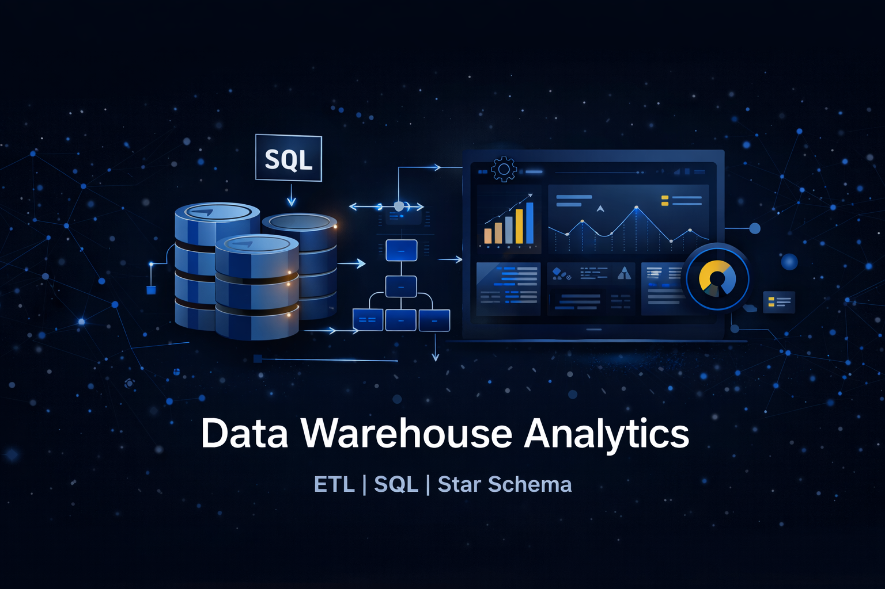
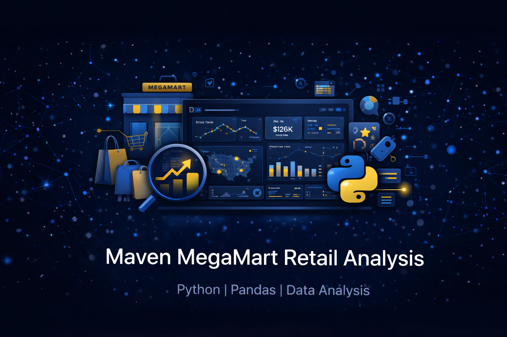
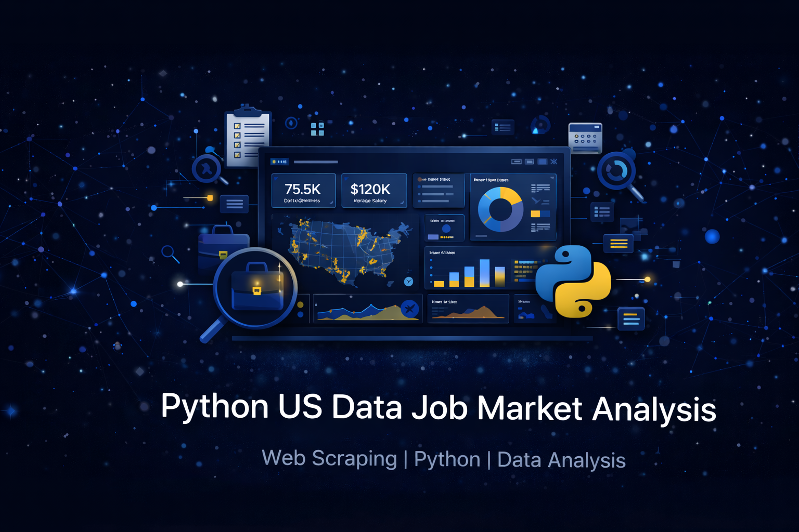
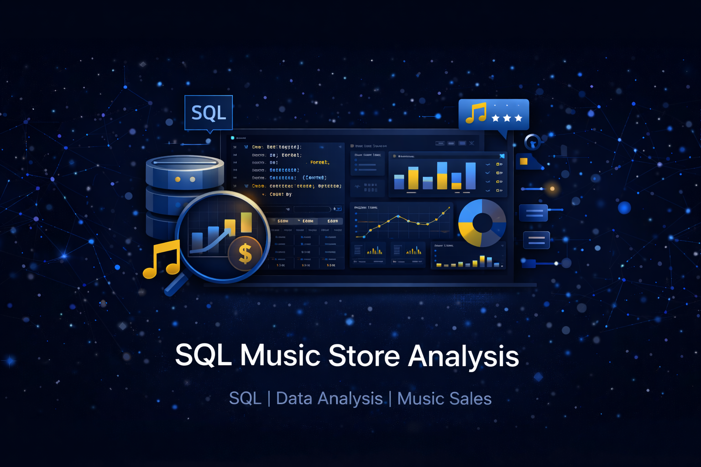
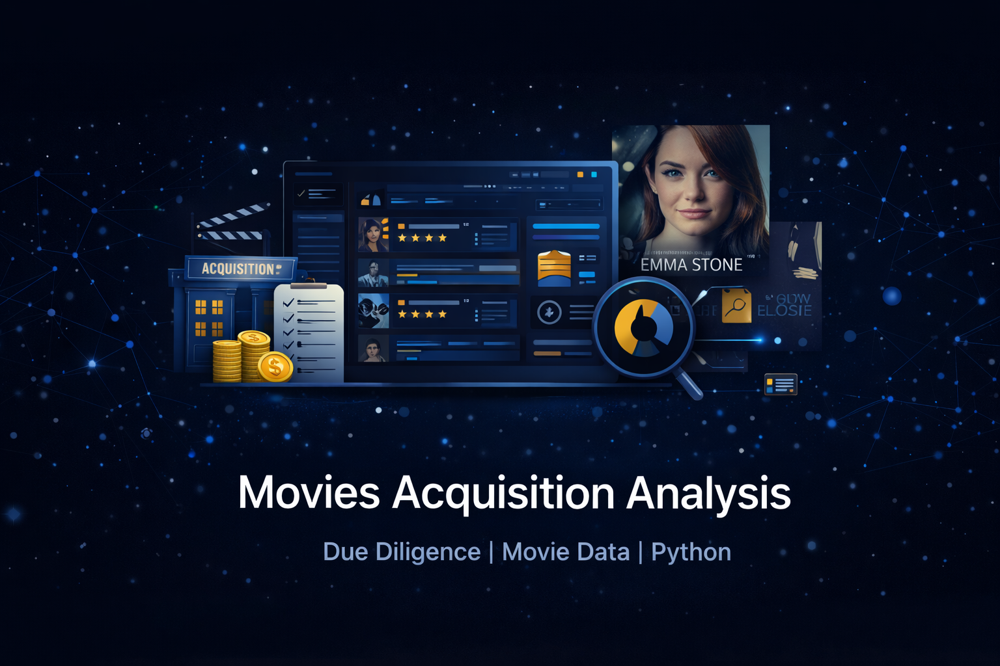
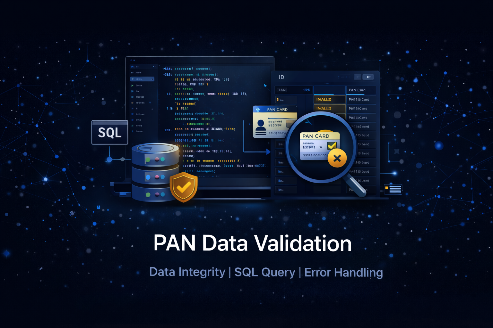
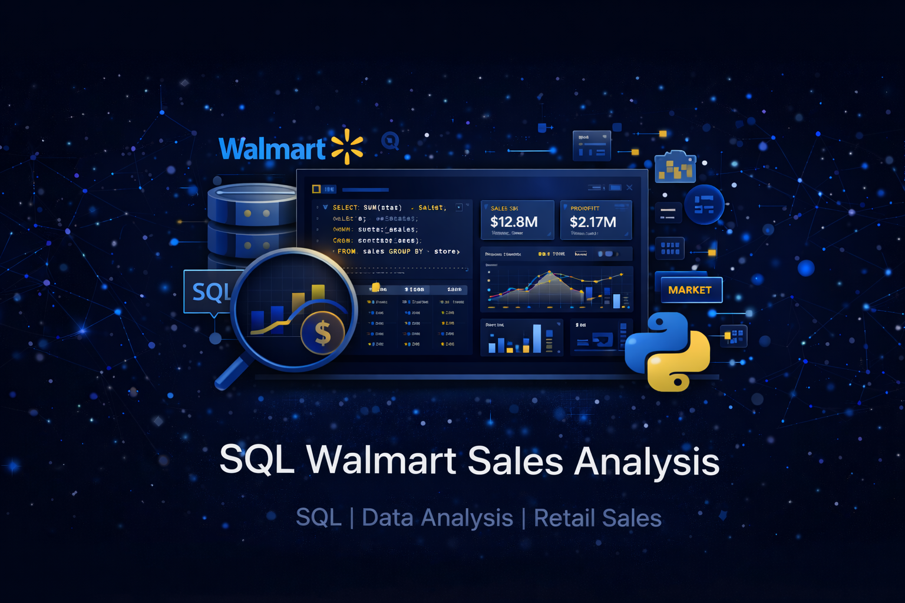

DATA ANALYST • BENGALURU, INDIA
Turning raw datasets into measurable business growth.
Specialized in SQL, Python, and Power BI for analyzing large datasets, building dashboards, and telling stories with numbers.
0+
Years Experience
0+
Projects Built
0%
SLA Compliance
About
I solve business problems by extracting insights from complex datasets. Proficient in SQL, Python, and Excel, I craft clear data stories and build analytical solutions that drive impact.
Data Analysis
Explore datasets using SQL and Python to identify trends, anomalies, and actionable business insights.
Data Visualization
Create interactive Power BI dashboards to communicate insights clearly to stakeholders.
Data Engineering
Design ETL pipelines and data warehouse architectures for analytics-ready datasets.
Skills & Tools
Advanced querying for data analysis including joins, CTEs, window functions, and data warehousing concepts.
Experience working with relational databases for data storage, querying, and analytics workflows.
Data manipulation, analysis, and visualization using Python libraries.
Building interactive dashboards and reports to communicate data insights effectively.
Analyzing datasets to uncover trends, patterns, and actionable insights that drive business decisions.
Proficient with tools that enhance productivity and collaboration in data projects.
My Analytics Workflow
01. Data Collection
Gather datasets from databases, APIs, or CSV sources and ensure completeness before analysis.
02. Data Cleaning
Handle missing values, remove duplicates, and standardize formats using SQL and Python.
03. Exploratory Analysis
Identify patterns, trends, and correlations using Python, Pandas, and visualization tools.
04. Data Modeling
Structure datasets using dimensional modeling and SQL transformations.
05. Visualization
Create dashboards in Power BI to communicate insights to stakeholders.
06. Business Insights
Translate findings into actionable recommendations that support business decisions.
Featured Projects
Adventure Works Power BI Dashboard
Created a multi-page Power BI dashboard analysing KPIs, regional performance, product sales, and customer segments.

SQL Server Data Warehouse Project
Designed an end-to-end SQL Server data warehouse using Medallion Architecture with ETL pipelines and dimensional modelling.
AtliQ Hospitality Data Analysis
Performed exploratory data analysis on hotel booking data to uncover revenue trends and occupancy patterns.

Maven MegaMart Sales Analysis (Python)
Analysed millions of retail transactions to identify key revenue drivers and seasonal sales patterns.
Featured Case Study
Adventure Works Sales Dashboard
Problem
Business stakeholders lacked visibility into sales performance.
Approach
Built an interactive Power BI dashboard combining product and sales data.
Insights
- Top 3 categories generated 45% revenue
- North America highest margins
- Seasonal spikes in Q4
Impact
Enabled stakeholders to monitor performance and identify growth opportunities.
Other Projects

U.S. Data Analyst Job Trends (Python)
Analysed job postings to identify in-demand skills, salary ranges, and hiring trends in the data analyst market.

SQL Music Store Analysis (PostgreSQL)
SQL-based exploratory analysis of a digital music store dataset using joins, CTEs, and window functions.

Maven Movies Acquisition Analysis (MySQL)
Simulated acquisition due diligence analysis to evaluate revenue stability, inventory risk, and customer lifetime value.

PAN Number Validation & Data Quality Analysis
Built a PostgreSQL pipeline to validate and clean PAN numbers using regex, duplicate detection, and data quality checks.

Walmart Sales Analysis (SQL Server)
Analysed Walmart sales data using SQL to uncover customer behaviour patterns and top-performing products.
Power BI Data Jobs Market Dashboard
Built a Power BI dashboard analysing job market trends including salary benchmarks and in-demand data skills.
Experience
Telecom Operations Analyst
2022 — PRESENTFusion CX / Sequential Technology International
- Coordinated porting operations for 30,000+ telecom numbers
- Maintained 98%+ SLA compliance
- Improved order processing turnaround time by 20–30%
- Conducted root cause analysis to resolve provisioning issues
0+
Telecom numbers Migrations Handled
0%
SLA Compliance maintained
0%
Turnaround time improvement
TELECOM → DATA SKILLS
| TELECOM WORK | DATA SKILL |
|---|---|
| SLA tracking | Data monitoring & KPIs |
| Porting migrations | Data operations & ETL |
| Root Cause Analysis | Analytical thinking |
| Order backlog reduction | Process analytics |
| Escalation analysis | Business insights |
Certifications
GitHub Stats
Contact
I'm open to new opportunities and collaborations. Let's connect!